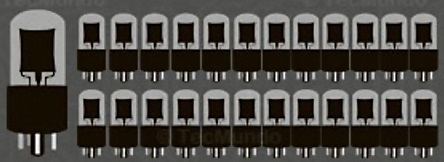

Componentes De Cada Geração:
existem no total cinco gerações de computadores,
são definidas por suas tecnologias e componenteas empregados:
válvulas, transistores, circuitos integrados, microprocessadores e inteligência artificial.
A Evolução Dos Computadores:
Primeira Geração [1940-1959]
